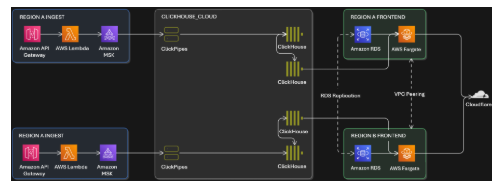

Blog 2
How Laravel Nightwatch handles billions of observability events in real time with Amazon MSK and ClickHouse Cloud
by Masudur Rahaman Sayem, James Carpenter, Jess Archer, and Johnny Mirza on 01 OCT 2025 in Amazon Managed Streaming for Apache Kafka (Amazon MSK), Analytics, Expert (400), Technical How-to
Laravel, one of the world’s most popular web frameworks, launched its first-party observability platform, Laravel Nightwatch, to provide developers with real-time insights into application performance. Built entirely on AWS managed services and ClickHouse Cloud, the service already processes over one billion events per day while maintaining sub-second query latency, giving developers instant visibility into the health of their applications.
By combining Amazon Managed Streaming for Apache Kafka (Amazon MSK) with ClickHouse Cloud and AWS Lambda, Laravel Nightwatch delivers high-volume, low-latency monitoring at scale, while maintaining the simplicity and developer experience Laravel is known for.
The challenge: Delivering real-time monitoring for a global developer community
The Laravel framework powers millions of applications worldwide, serving billions of requests each month. Each request can generate potentially hundreds of observability events, such as database queries, queued jobs, cache lookups, emails, notifications, and exceptions. For Nightwatch’s launch, Laravel anticipated instant adoption from its global community, with tens of thousands of applications sending events around the clock from day one.
Laravel Nightwatch needed an architecture that could:
- Ingest millions of JSON events per second from customer applications reliably.
- Provide sub-second analytical queries for real-time dashboards.
- Scale horizontally to handle unpredictable traffic spikes.
- Deliver all of this in a cost-effective, low-maintenance manner.
The challenge was to process data on a global scale and provide deep insights into application health without compromising on a straightforward setup experience for developers.
The solution: A decoupled streaming and analytics pipeline
Laravel Nightwatch implemented a dual-database, streaming-first architecture, shown in the preceding figure, that separates transactional and analytical workloads.
- Transactional workloads – user accounts, organization settings, billing, and similar workloads run on Amazon RDS for PostgreSQL.
- Analytical workloads – telemetry events, metrics, query logs, and request traces are handled by ClickHouse Cloud.
Key components
The key components of the solution include the following:
Ingestion layer
- Amazon API Gateway receives telemetry from Laravel agents embedded in customer applications.
- Lambda validates and enriches events. Validated and enriched events are published to Amazon MSK, partitioned for scalability.
Streaming to analytics
- ClickPipes in ClickHouse Cloud subscribe directly to MSK topics, reducing the need to build and manage extract, transform, and load (ETL) pipelines.
- Materialized views in ClickHouse pre-aggregate and transform raw JSON into query-ready formats.
Dashboards and delivery
- The Nightwatch dashboard, built with Laravel, Inertia, and React, runs on AWS Fargate for Amazon ECS.
- Amazon ElastiCache for Redis accelerates session and cache lookups.
- Cloudflare CDN provides low-latency delivery to global users.

Why Amazon MSK and ClickHouse Cloud?
Nightwatch requires a durable, horizontally scalable, and low maintenance streaming backbone.
With Amazon MSK Express brokers, we have achieved over 1 million events per second during load testing, benefiting from low-latency, elastic scaling, and simplified operations. MSK Express brokers require no storage sizing or provisioning, scale up to 20 times faster, and recover 90% quicker than standard Apache Kafka brokers—all while enforcing best-practice defaults and client quotas for reliable performance. Its seamless integration with other AWS services—such as Lambda, Amazon Simple Storage Service (Amazon S3), and Amazon CloudWatch—made it straightforward to build a resilient, end-to-end streaming architecture.
To ingest and transform these events in real time, Nightwatch uses ClickHouse Cloud and its managed integration platform, ClickPipes. ClickHouse Cloud excels at analytical workloads by delivering up to 100 times faster query performance for analytics compared to traditional row-based databases. Its advanced compression algorithms provide up to 90% storage savings, significantly reducing infrastructure costs while maintaining high performance. With its columnar architecture and optimized execution engine, ClickHouse Cloud can query billions of rows in under 1 second, enabling Laravel Nightwatch to serve real-time dashboards and analytics at global scale.
By integrating Amazon MSK and ClickHouse using ClickPipes, Laravel also reduced the operational burden of building and managing ETL pipelines, reducing latency and complexity.
Overcoming challenges
Testing complexity
While synthetic benchmarking and test datasets yield useful results, a more realistic workload is required to rigorously test infrastructure and code before deployment to production. The team used Terraform to manage infrastructure alongside application code, creating multiple dev and test environments, and allowing them to test the platform internally with their own applications before each release.
Multi-region infrastructure
The need to cater to multiple data storage regions also brought challenges—with latency, complexity, and cost the foremost concerns. However, the AWS, ClickHouse Cloud, and Cloudflare stack made available a powerful set of networking tools and scaling options. While VPC peering, RDS replication, and global server load balancing did the heavy lifting on the networking side, the ability to scale and right-size each resource kept costs to a minimum.
Query performance at scale
Materialized views, intelligent time-series partitioning, and specialized ClickHouse codecs helped ensure that queries remained sub-second even as data volumes grew into the billions. Meanwhile, compute separation allowed distinct workloads to scale separately while accessing the same data, with clusters right-sized horizontally and vertically depending on the requirements of each load.
Results
Laravel Nightwatch’s launch exceeded expectations:
- 5,300 users registered in the first 24 hours
- 500 million events processed on day one
- 97 ms average dashboard request latency
- 760,000 exceptions logged and analyzed in real time
By building on Amazon MSK and ClickHouse Cloud, we were able to scale from zero to billions of events without sacrificing performance or developer experience.
What’s next
Laravel plans to expand Nightwatch with:
- More regions to cater to customers with data sovereignty requirements outside the US and EU.
- Broader data collection to provide even deeper insight into customers’ applications.
- SOC 2 certification to cater to customers with tighter compliance requirements.
- More advanced monitoring and analysis to identify issues before they affect users.
The current architecture comfortably supports applications of all sizes, from hobby to enterprise (including a generous free tier), and is designed to handle over one trillion monthly events without performance degradation.
Conclusion
Laravel Nightwatch demonstrates how Amazon MSK, ClickHouse Cloud, and AWS serverless technologies can be combined to build a cost-effective, real-time monitoring platform at global scale. By designing for scale from day one, Laravel delivered sub-second analytics across billions of events, while maintaining the developer-friendly experience their community expects.
About the authors
 Jess Archer is an Engineering Manager and Head of Nightwatch at Laravel, focusing on application observability, performance monitoring, and developer experience. She leads the Nightwatch team while staying hands-on in the codebase. Prior to Laravel, Jess worked on clinical data collection platforms, software for law enforcement, and anti-phishing solutions in banking. She later contributed extensively to Laravel’s open-source ecosystem before moving into her current leadership role. Jess is deeply passionate about open source and creating tools that make developers more productive.
Jess Archer is an Engineering Manager and Head of Nightwatch at Laravel, focusing on application observability, performance monitoring, and developer experience. She leads the Nightwatch team while staying hands-on in the codebase. Prior to Laravel, Jess worked on clinical data collection platforms, software for law enforcement, and anti-phishing solutions in banking. She later contributed extensively to Laravel’s open-source ecosystem before moving into her current leadership role. Jess is deeply passionate about open source and creating tools that make developers more productive.
 James Carpenter is a Senior Infrastructure Engineer joined Laravel in 2024 as Infrastructure Lead for the Nightwatch team, bringing experience from 15 years in sport and healthcare. Specialising in DevOps and Infrastructure, he is passionate about solving complex problems and creating exceptional experiences for both customers and developers.
James Carpenter is a Senior Infrastructure Engineer joined Laravel in 2024 as Infrastructure Lead for the Nightwatch team, bringing experience from 15 years in sport and healthcare. Specialising in DevOps and Infrastructure, he is passionate about solving complex problems and creating exceptional experiences for both customers and developers.
 Johnny Mirza is a Solution Architect with ClickHouse, working with users across APAC. With over 20 years of background in solutions engineering, he’s experienced in architecting and enabling solutions for enterprise clients in the telecommunications, media, insurance, and financial services sectors. Johnny has a high level of expertise of integration between both public cloud and on-premise infrastructure, while focussing on service assurance, monitoring platforms, and open-source technologies. Prior to ClickHouse, Johnny was part of the solution engineering teams at Confluent, Splunk, and Optus, to name a few.
Johnny Mirza is a Solution Architect with ClickHouse, working with users across APAC. With over 20 years of background in solutions engineering, he’s experienced in architecting and enabling solutions for enterprise clients in the telecommunications, media, insurance, and financial services sectors. Johnny has a high level of expertise of integration between both public cloud and on-premise infrastructure, while focussing on service assurance, monitoring platforms, and open-source technologies. Prior to ClickHouse, Johnny was part of the solution engineering teams at Confluent, Splunk, and Optus, to name a few.
 Masudur Rahaman Sayem is a Streaming Data Architect at AWS with over 25 years of experience in the IT industry. He collaborates with AWS customers worldwide to architect and implement sophisticated data streaming solutions that address complex business challenges. As an expert in distributed computing, Sayem specializes in designing large-scale distributed systems architecture for maximum performance and scalability. He has a keen interest and passion for distributed architecture, which he applies to designing enterprise-grade solutions at internet scale.
Masudur Rahaman Sayem is a Streaming Data Architect at AWS with over 25 years of experience in the IT industry. He collaborates with AWS customers worldwide to architect and implement sophisticated data streaming solutions that address complex business challenges. As an expert in distributed computing, Sayem specializes in designing large-scale distributed systems architecture for maximum performance and scalability. He has a keen interest and passion for distributed architecture, which he applies to designing enterprise-grade solutions at internet scale.